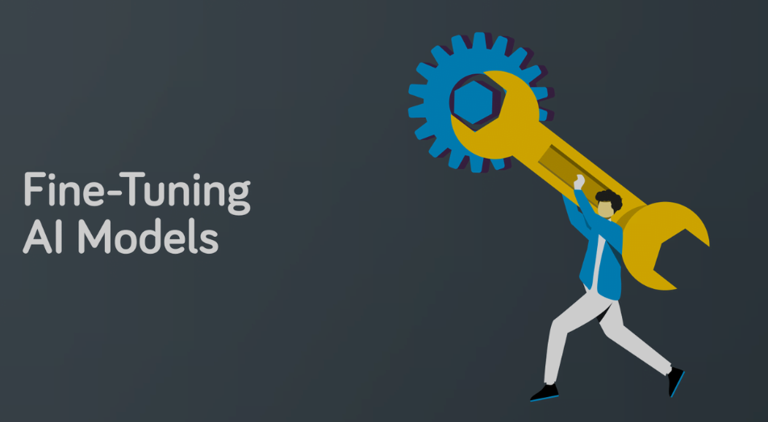

Apica
CertiQ
Logmaster
Нейронных сети. Анализ изображения.
Нейронные сети. Обучение с подкреплением.
Нейронные сети. Дообучение нейронных сетей (Fine-Tuning AI Models).
-

1
Generative Pre-trained Transformer ещё один вид нейронных сетей набирающий популярность.
Одно из определений - это нейронная сеть для генерации (продолжения) текста.
Другое определение - это языковая модель, основанная на архитектуре трансформер и обученная в self-supervised режиме на большом количестве текстовых данных.
В рамках этого проекты была поставлена задача не определять возможности (они без условно велики), а получше узнать производительность и скорость обучения подобных моделей на мощностях ПК.
-

2
В качестве основы была взята предобученная модель:sberbank-ai/rugpt3large_based_on_gpt2.
А в качестве текста для дообучения была выбрана первая глава из книги ВП СССР "Достаточно общая теория управления":Глава 1. Достаточно общая теория управления: зачем это надо?
-
3
Эксперимент 1.
Вопрос: Что такое достаточно общая теория управления?
Ответ (оригинальная модель):
Расскажи про достаточно общую теорию управления, а не только про управление конкретными процессами и их элементами. Какие предметы нужно сдавать на ЕГЭ, чтобы поступить в вуз? Русский, математика, обществознание.
Анализ:Не очень информативно.
-
4
Эксперимент 2.
Вопрос: Что такое достаточно общая теория управления?
Ответ (дообученная модель):
Расскажи про достаточно общую теорию управления, а то я что-то подзабыл. — Теория управления — это раздел философии, изучающий мир и процессы в нём, а также способы и методы управления этими процессами. В общем виде теория управления — это обобщение и конкретизация знаний, которые человек в состоянии обобщить и систематизировать для того, чтобы с его помощью в какой-либо области деятельности можно было эффективно управлять конкретными процессами и процессами в целом.
Анализ: Ответ кажется уже более "осмысленным" или более близким к определению. Но на самом деле если присмотреться, и по тексту и по смыслу ответ далёк от того что было в тексте дообучения. А это значит эта информация и так уже присутствовала в модели и до дообучения, но из-за изменений в модели пути поиска тоже сменились и как следствие и текст в качестве ответа.
-
5
Эксперимент 3.
Параметр - температура был увеличен (выбираются менее вероятные токены при поиске) Вопрос: Что такое достаточно общая теория управления?
Ответ (дообученная модель):
В общих чертах управление — это умение управлять по отношению к различным по уровню и характеру потребностям людей материальным и нематериальным активам — предметам и процессам материального мира. Управление возможно на основе практических навыков, которые индивид-управленец более или менее целенаправленно и осознанно использует, развивает и накапливает в качестве своего жизненного опыта. Какая-либо теория ему лично для осуществления управления в общем-то не нужна, если он достаточно чувствителен и внимателен к тому, что происходит в сфере его деятельности.
Анализ: Ответ кажется просто комбинацией из разных источников. И если внимательно присмотреться, второе и третье предложение один в один предложения из второго абзаца текста для дообучения.
-
6
Заключение.
В рамках этого эксперимента были освоены инструменты для получения и дообучения моделей.
Также были зафиксированы результаты дообучения.
Производительность сети на ПК можно считать удовлетворительной (примерно 10-15 секунд на ответ).
А вот процесс дообучение чисто на ЦПУ занял порядка 3 часов. С учётом того что модель достаточно лёгкая (~3GB), а текст для дообучения очень небольшой, можно сделать вывод что на ПК каких-то серьёзных результатов в этом направлении добиться очень не просто (по крайней мере без поддержки GPU точно).